Endangered Species of Malaysia
The rainforests of Malaysia are some of the oldest in the world, hosting unique and endangered wildlife.
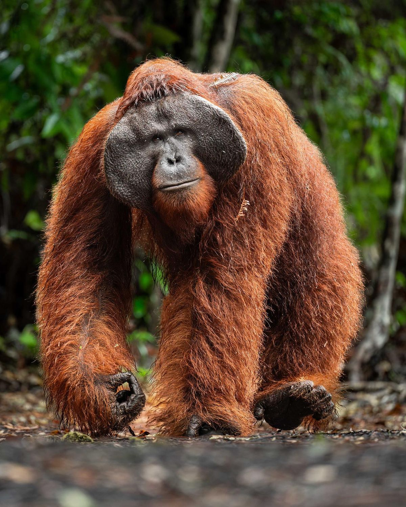
Orangutan Borneo
Scientific Name: Pongo pygmaeus
Status: Critically Endangered
State: Kelantan
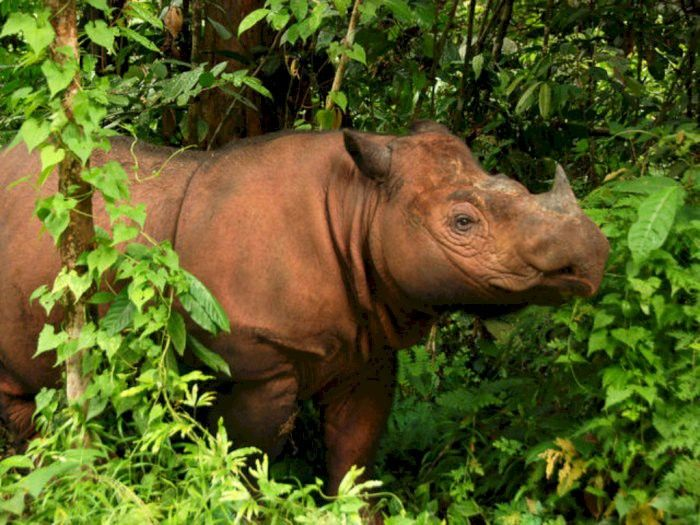
Badak Sumatera
Scientific Name: Dicerorhinus sumatrensis
Status: Critically Endangered
State: Sabah
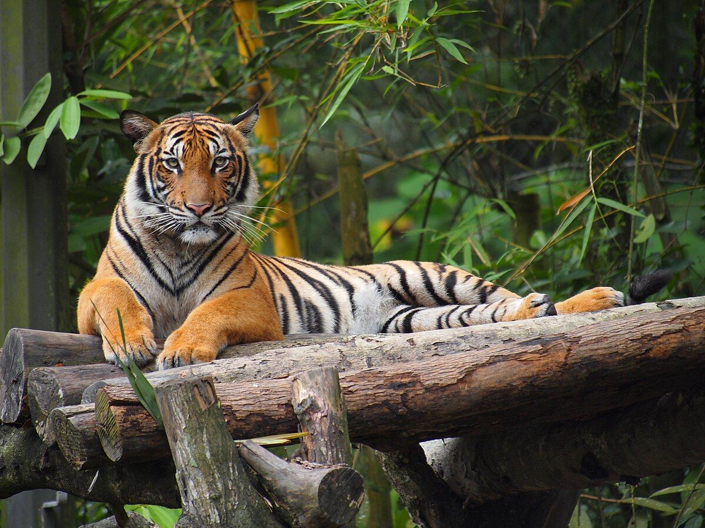
Harimau Malaya
Scientific Name: Panthera tigris jacksoni
Status: Endangered
State: Johor
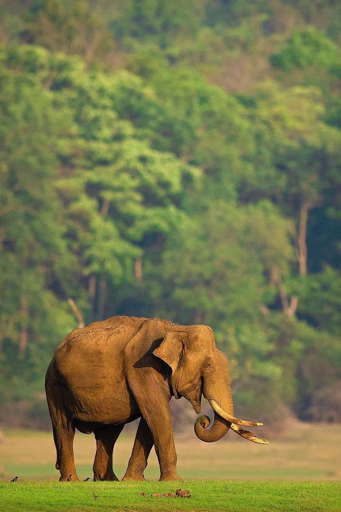
Gajah Asia
Scientific Name: Elephas maximus
Status: Endangered
State: Johor
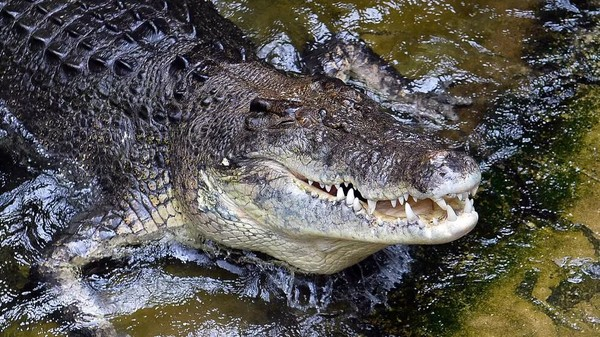
Buaya Air Payau
Scientific Name: Crocodylus porosus
Status: Vulnerable
State: Melaka
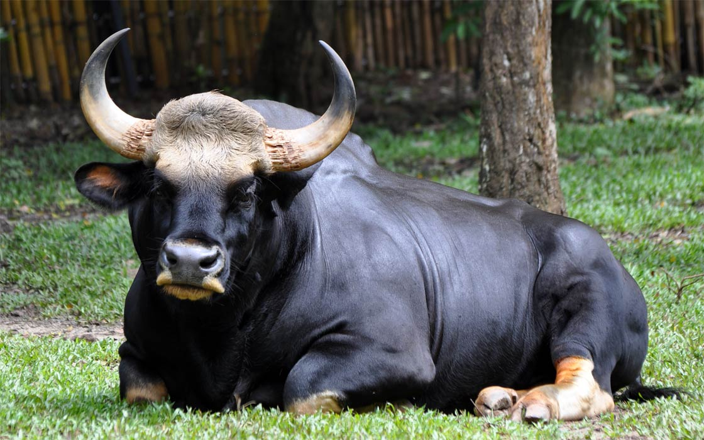
Seladang
Scientific Name: Bos gaurus
Status: Vulnerable
State: Perak
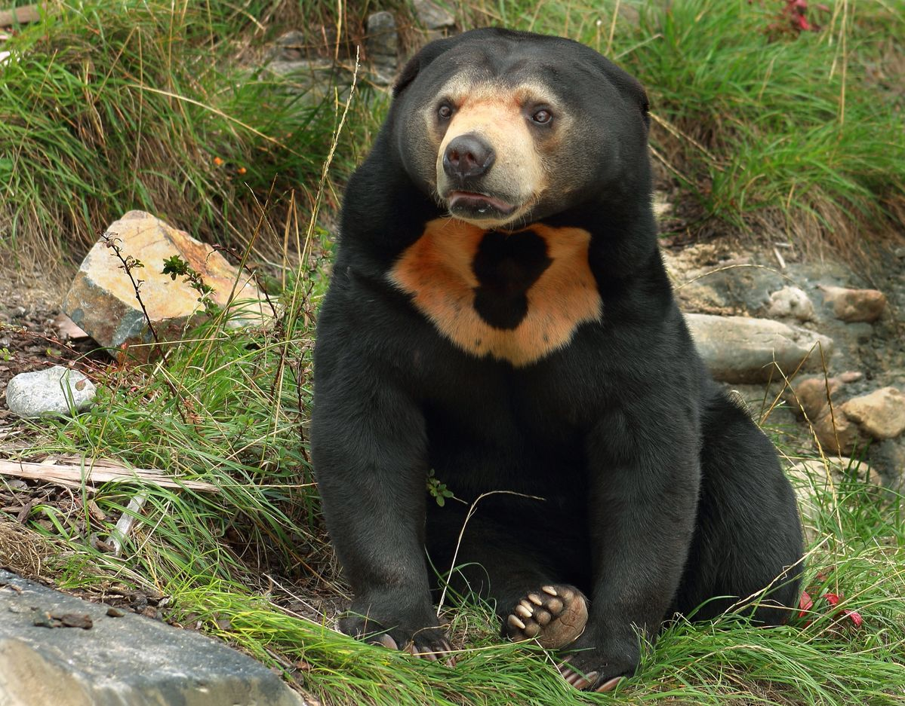
Beruang Matahari
Scientific Name: Ursus malayanus
Status: Vulnerable
State: Pahang
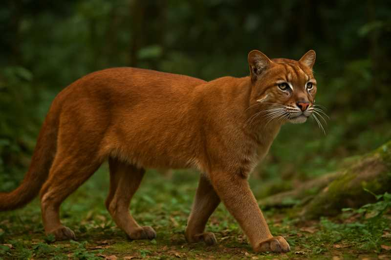
Kucing Emas
Status: Near Threatened
State: Sarawak
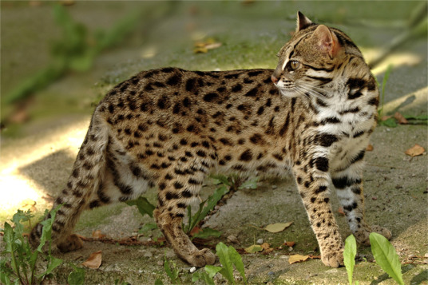
Kucing Hutan
Scientific Name: Prionailurus bengalensis
Status: Near Threatened
State: Selangor
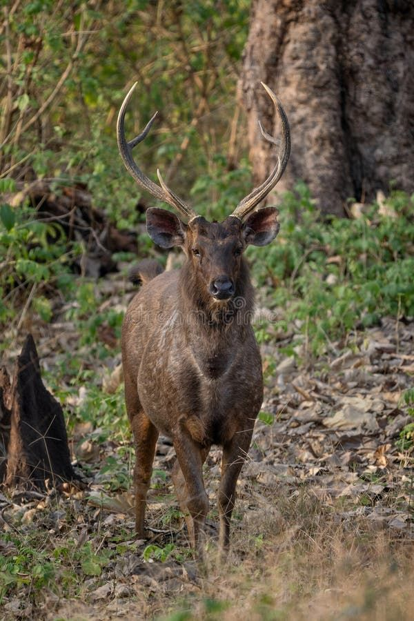
Rusa Sambar
Scientific Name: Cervus unicolor
Status: Not Endangered
State: Johor
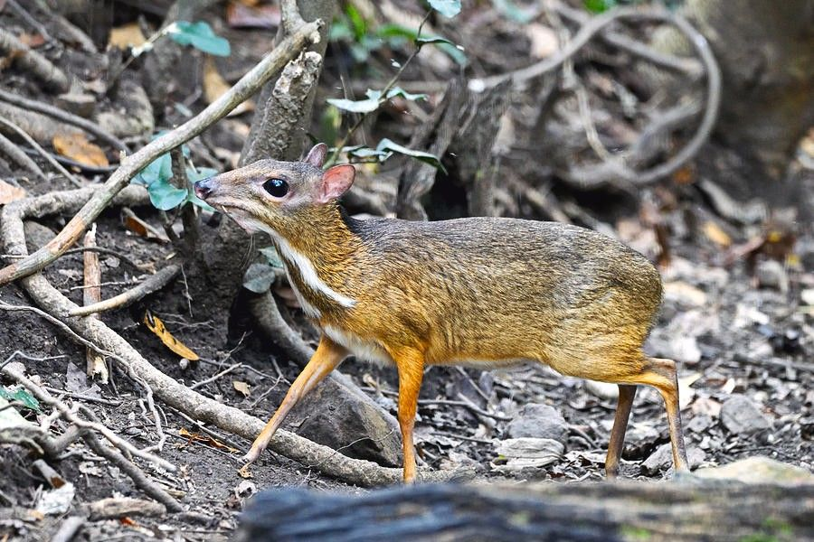
Kancil
Scientific Name: Tragulus javanicus
Status: Not Endangered
State: Kedah
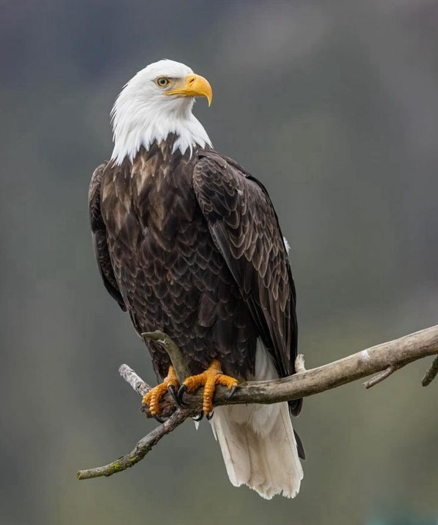
Helang
Scientific Name: Spilornis cheela
Status: Not Endangered
State: Kedah
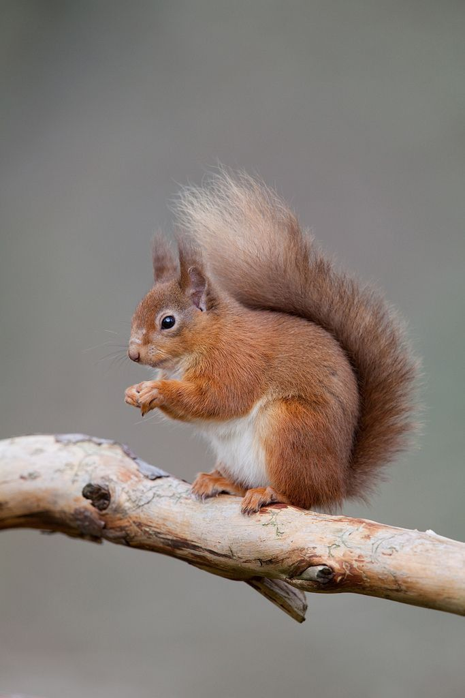
Tupai
Scientific Name: Family Sciuridae
Status: Not Endangered
State: Kelantan
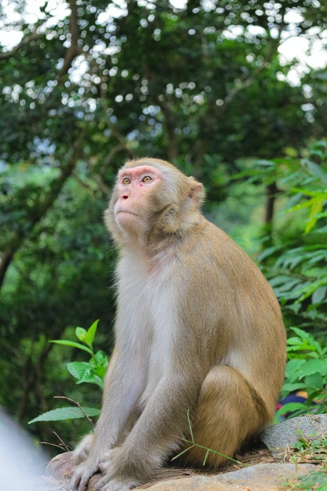
Kera
Scientific Name: Macaca fascicularis
Status: Not Endangered
State: Melaka
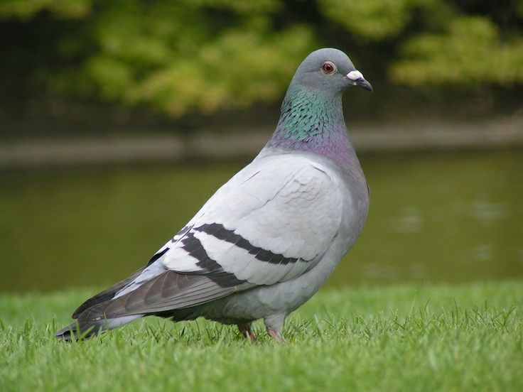
Burung Merpati
Scientific Name: Columba livia
Status: Not Endangered
State: Melaka

Ular Sawa
Scientific Name: Python reticulatus
Status: Not Endangered
State: Negeri Sembilan

Monyet Long-tailed Macaque
Scientific Name: Macaca fascicularis
Status: Not Endangered
State: Pulau Pinang